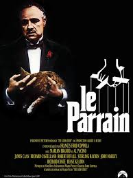
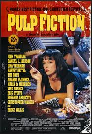
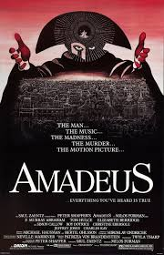

Avant le Wagon j'étais consultant en organisation, surtout auprès des administrations publiques. J'apprends à coder pour acquérir de nouvelles compétences, et pour lancer un projet ensuite !
Vers Le Wagon|  |
1 - Le Parrain, 1ère partieEn 1945, à New York, les Corleone sont une des cinq familles de la mafia. Don Vito Corleone, "parrain" de cette famille, marie sa fille à un bookmaker. Sollozzo, " parrain " de la famille Tattaglia, propose à Don Vito une association dans le trafic de drogue, mais celui-ci refuse. Sonny, un de ses fils, y est quant à lui favorable. Afin de traiter avec Sonny, Sollozzo tente de faire tuer Don Vito, mais celui-ci en réchappe. Michael, le frère cadet de Sonny, recherche alors les commanditaires de l'attentat et tue Sollozzo et le chef de la police, en représailles. Michael part alors en Sicile, où il épouse Apollonia, mais celle-ci est assassinée à sa place. De retour à New York, Michael épouse Kay Adams et se prépare à devenir le successeur de son père... |
|  |
2 - Pulp FictionL'odyssée sanglante et burlesque de petits malfrats dans la jungle de Hollywood à travers trois histoires qui s'entremêlent. |
|  |
3 - AmadeusA Vienne, en novembre 1823. Au coeur de la nuit, un vieil homme égaré clame cette étonnante confession : "Pardonne, Mozart, pardonne à ton assassin !" Ce fantôme, c'est Antonio Salieri, jadis musicien réputé et compositeur officiel de la Cour. Dès l'enfance, il s'était voué tout entier au service de Dieu, s'engageant à le célébrer par sa musique, au prix d'un incessant labeur. Pour prix de ses sacrifices innombrables, il réclamait la gloire éternelle. Son talent, reconnu par l'empereur mélomane Joseph II, valut durant quelques années à Salieri les plus hautes distinctions. Mais, en 1781, un jeune homme arrive à Vienne, précédé d'une flatteuse réputation. Wolfgang Amadeus Mozart est devenu le plus grand compositeur du siècle. Réalisant la menace que représente pour lui ce surdoué arrogant dont il admire le profond génie, Salieri tente de l'évincer. |